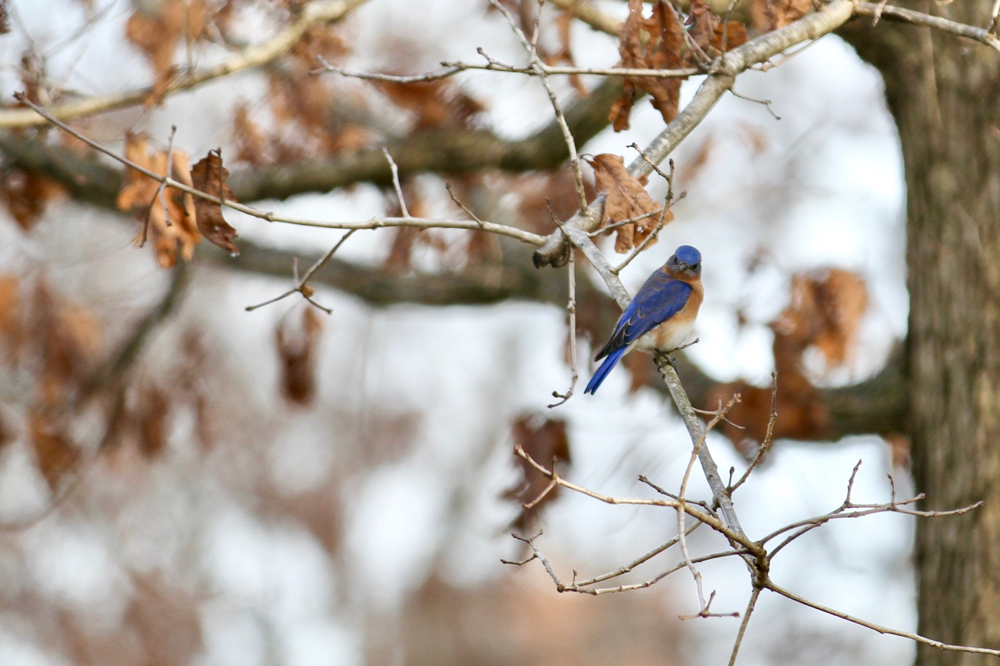
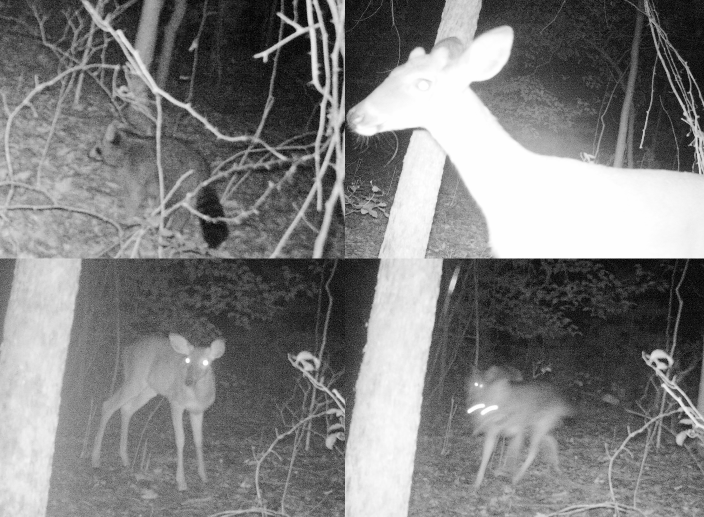

Campus plays host to a diverse community of wildlife, if you just know where to look
By Alex Hager
Mar. 14, 2019
Amid the thousands of students flitting from class to class, there are thousands more beings that call Elon home. Despite the campus’s neatly trimmed lawns and precisely manicured bushes, it plays host to a robust and diverse community of plants and animals, all sharing space with throngs of human neighbors.
But ask a biologist and they’ll say our relationship to those animals is less like roommates sharing an apartment, and more like tourists in someone else’s hometown.
“We live in a foreign culture,” said Elon professor of biology and bird expert Dave Gammon. “This is bird habitat. Once you view it through that lens, you understand that you’re just a visitor.”
For every student dorm or apartment, there are burrows, woods, ponds and puddles where critters of all kinds are nestled.
That world all hangs in a delicate balance. For some, every day is a constant scramble to find food and avoid becoming food. But for every member of this animal community, there’s a pressure to adapt and survive in a world where humans are encroaching on their way of life.
A mallard duck by Lake Mary Nell
Starting at the root
To wrap your head around the massive and diverse world of animals that call Elon home, it helps to start at the base of the whole system. Where that base is, though, depends on who you ask.
“If you ask the algae guy where algae fits in,” said Elon assistant professor of biology Jen Hamel. “He’s going to tell you it holds everything together, and if you ask the tree guy where trees fit in, he’s going to tell you they hold everything together, and if you ask the insect person where insects fit in, with complete genuine sincerity, I’m going to tell you they hold it all together.”
Elon’s ecosystem in particular seems to start, unsurprisingly, with the trees. Just as the mighty oaks looming over campus are the cornerstone of the school’s branding, they’re also at the very heart of the natural habitat on campus.
The food chain establishes a pretty clear hierarchy of who eats whom, from the top predators all the way down to bugs that are almost too small to see. But even the smallest critters in the food chain need to eat something to survive. In this case, those smallest members of the food chain are insects, and many of them rely on trees and other plants to survive.
The campus habitat features trees in abundance. Not only does they look pretty, but those trees play to a subconscious phenomenon that makes us feel relaxed. As David Vandermast, associate professor of biology and tree expert explained, this is due in part to a psychological preference that has its roots in the early days of human evolution.
“If you go way back to when our ancestors became bipedal,” said Vandermast, “it was probably in situations with large, distantly-spaced trees and good sightlines. So you’re protected from above, but you can see if there’s something ahead of you that could potentially attack you. So psychologically, we’re hardwired to like that.”
Because of this, he says, college campuses and public parks often plant trees accordingly, creating an environment that makes people feel safe and at ease.
Some parts of Elon's campus, like the aptly named "Under the Oaks" in the Historic Neighborhood, provide areas with long sightlines and ample overhead cover
Just as humans find comfort in the shade of the omnipresent oaks, species of all kinds have carved out homes for themselves in Elon’s arboreal inhabitants. Any given tree can be home to hundreds, if not thousands, of individual living beings from tiny insects to birds and rodents.
The presence of trees at Elon is as diverse as it is eye-catching. The university often touts its status as a designated botanical garden. A stroll through the leaf-shaded brick paths of Elon will take you by plaques identifying different species of plants, some native to the area and others spliced into the environment for aesthetic purposes. While native and non-native plants alike are part of campus’s verdant backdrop, they play vastly different roles in the local ecosystem.
Species native to the area can fit seamlessly into the greater web of local wildlife, but imported species, some from far-flung regions or continents, don’t have that ability. Because of that, they have little to offer to animal species that are evolutionarily built to consume and inhabit species of plants that have been here for centuries.
In one experiment in a nearby county, an ecologist planted two trees next to each other under identical conditions. After allowing some time for growth, the white oak, a native species, was harboring about fifty species of caterpillars. Right next to it, a Bradford pear tree — originally from China and Vietnam and not at all part of central North Carolina’s ecosystem — only had four. The native tree could support native insects, but the non-native tree right next to it was practically uninhabitable.
The effects of that phenomenon go far beyond just caterpillars. A tree with no native insect species is practically worthless to local bird species that can only feed on the types of insects they’re used to seeing in the area.
Birds like this Eastern Bluebird rely on a thriving insect population for consumption
So while non-native trees planted at Elon may look like they fit right in next to their native neighbors, they play vastly different roles in the bigger picture of what lives on campus.
"For people who don’t understand nature and diversity in any detail,” Vandermast said. “A tree is a tree is a tree. A plant is a plant.”
Fungus among us
Insects, birds, and small mammals aren’t the only members of the Elon ecosystem tethered to trees for survival. While just about everything else living on campus can be separated into one of two groups — plant or animal — that other member falls into a third category that often gets overlooked: fungi.
Not only are they not in the same category as trees and shrubs, but they’re genetically closer to humans than they are to plants. Fungi, types of microbes, take many forms. Everything from mold to yeast to athlete’s foot are types of fungi, but the kind you’re most likely to see among Elon’s trees are mushrooms.
Campus and the surrounding wooded areas play host to thousands of species of fungi, and Antonio Izzo, an Elon professor of biology, says finding and identifying them can be like a treasure hunt.
“It’s the Pokemon Go of nature,” Izzo said.
Fungi, like Pokemon, come in all kinds of vibrant patterns and colors, making them easy to spot. Many of the species living on campus can be found right at the base of trees, latched on to the root system just beneath the dirt. While some species act as pathogens and suffocate their host plants, many have a symbiotic relationship with trees. Myccorhizal fungi — the kind that have a give-and-take relationship with plants — exchange nutrients with trees and have particularly healthy relationships with oaks.
Up close, fungi like this decomposer can reveal intricate patterns
Just like insects, fungi that depend on native plant species for survival will do better in an environment with more of those native species that they’ve become accustomed to living with through millennia of evolution.
Healthy fungal systems, in environments with a strong presence of the plant species that feed them, can get massive. In fact, the world’s largest living organism is a fungus. Out in Oregon’s Malheur National Forest, one fungus with a sprawling network of subterranean roots covers over 2,000 acres of land. Thanks to its complicated system of nutrient-carrying roots, a single organism covers almost four square miles.
Izzo calls those fungal networks — the kind that can cover acres upon acres underneath the forest — the “wood-wide-web.”
While fungi of that magnitude are rare, Izzo says something similar could potentially be lurking beneath the ground near Elon.
In the Elon University forest, a 56-acre patch of protected woodland just north of campus, his research has found the same species of fungi living near the base of oaks and pines. The land, which the school designated as undeveloped in 2010, is large and undisturbed enough to host a far-reaching underground system. While they could be smaller, unconnected individuals, there’s a chance they’re all one organism connected deep under the soil, like the fungus out in Oregon.
Where insects intersect
Moving one step up in the food chain, you’ll find the smallest of creatures living on campus. Insects, from midges to moths and hundreds of other species in between, are everywhere. And, at every level, they play a pivotal role to the rest of the ecosystem.
They’re food for small animals, decomposers of organic waste, and a key part of plant reproduction. With insects out of the picture, birds and reptiles lose a massive part of their diets. Without bugs moving from flower to flower, blooming plants have no way to move pollen around and keep their own species alive and well.
Different kinds of insects prefer different kinds of habitats, but Elon has a wide variety all bumping up next to each other, according to assistant professors of biology and insect expert Jen Hamel. The wide variety of native trees in the Elon University Forest and the prairie-like meadow at Loy Farm make for great insect habitats.
The Elon biology department keeps a robust catalogue of insect species found in the area. Deep in a storage room, at the end of a long hall in the McMichael science building, there’s a diorama of insect specimens captured throughout Alamance County, and a few species from further away. Some were caught and put in the display as long ago as the 1980s, while others were added only a few years ago.
Scroll to explore some of the insects in the McMichael collection. Hover for identification and click to enlarge
Some, like mosquitoes, are so tiny that they’re barely visible even when they’re on clear display in the diorama. Others, like the ornately decorated tulip-tree silkmoth, are eye-catching from far away.
The key to seeing them on campus, says Hamel, is knowing where to look. She says insects like hiding in tall grasses for protection and can often be found in sunny spots, where they linger for warmth.
Shells, scales and swamps
A keen-eyed observer on the shores of Lake Mary Nell might notice a small black head popping up above the surface from time to time. With a body obscured by the murky waters beneath, it’s hard to tell who the head belongs to. But it’s no lake monster — it’s a turtle — one of many reptiles and amphibians that make their homes in and around the water.
Frogs, turtles, snakes, lizards and the occasional skink make their way onto campus, but they generally stay away from the mowed grass that makes up a large portion of the Elon landscape, according to Elon professor of biology Greg Haenel. He says reptiles, on the hunt for insects and overhead protection, generally stay near taller vegetation and water, pushing them into swampy and overgrown areas.
Swampy drainage areas, like this one behind Alumni Field House, make good homes for to amphibians (Video by Liam O'Connor)
Fortunately for them, those kinds of habitats can be found on campus too. Beyond the lakes, drainage and runoff areas near large buildings or athletic fields can also provide friendly habitats for reptiles and amphibians.
Even if they can be hard to see, some of Elon’s amphibian residents are easy to hear. Evenings on the fringes of campus are soundtracked by the cacophonous droning chirp of the aptly named chorus frog. The tiny amphibians have skin dappled with browns and tans that make them almost indistinguishable from the muddy, leaf-covered terrain they tend to inhabit, but their loud call is impossible to miss.
Click to listen to chorus frogs on one February evening behind Alumni Field House
Elsewhere, other amphibians and reptiles maintain a more stealthy presence. Turtles — box turtles, painted turtles, snapping turtles and yellow-bellied sliders populate ponds and lakes. Where vegetation grows denser, in brushy areas and forests, you’ll find a variety of snakes — rough green snakes, garter snakes, black rat snakes and brown snakes.
Four legs and furry
Of all the animals in Elon’s invisible world — the swarms of tiny bugs, the darting subaquatic pond-dwellers — some area easier to see than others. Perhaps none are easier than the friendly and furry mammals that don’t make much of an effort to stay out of sight.
Squirrels, raccoons, deer and feral cats are no unfamiliar sight for anyone who’s spent time in a suburban environment. And unsurprisingly, on the crowded residential lanes of Elon, they’re among the most often seen.
Drive a few minutes past those houses, though, and you might catch a glimpse of some harder-to-spot four-legged creatures. At Loy Farm, a university-owned patch of land used for teaching biology and ecology classes, a large swath of undeveloped land has lured those kinds of animals.
Patricia Thomas-Laemont, an instructor of Environmental Studies at Elon, has seen them. Or, at least, her cameras have seen them. She and her students set up motion-activated camera traps to snap photos of some of the more elusive and flighty mammals that wander near Loy Farm. She says they’ve captured images of the usual suspects, such deer and skunks, but they’ve also seen groundhogs and coyotes.
Motion-sensing cameras, like this one set up in fall 2016, can snap photos of hard-to-track-down creatures like raccoons, deer and even coyotes
Out of the woods and in the tall grass, Thomas-Laemont studies some of the smaller mammals that crawl among the overgrowth. That kind of terrain resembles what Elon’s campus might have looked like before it was cleared for brick pathways, towering dorms and sprawling lawns. It’s home to mice, rats and shrews. While those species don’t often stray away from the safety of the tall grass and towards campus, another kind of rodent has made that trip for a different kind of safety.
Squirrels, perhaps Elon’s most recognizable and celebrated animal cohabitants, are among the lowest mammals on the food chain. And to avoid being eaten by snakes or birds of prey, they simply travel to where those predators don’t: human-inhabited spaces. Jumpy as they may seem around people, squirrels flock to campus to seek refuge from the type of animals that might just see them as their next meal.
The human footprint
While each and every species has its own unique spot in Elon’s ecosystem and its own unique requirements to thrive and survive, animals and plants at every level of the food chain have one thing in common. Their way of life has been forced to change by the increasing presence of humans.
All across the world, there’s evidence of significant decline in populations of all kinds. Global trends indicate widespread drops in variety and livelihood for insects and amphibians. Trees and other plants in practically every corner of the planet are facing encroachment from humanity’s expanding footprint on earth.
“The physical footprint always wins out,” Vandermast said. “It’s like a little microcosm of capitalism in this country that either you’re going to preserve a natural habitat or build a strip mall, and the strip malls win all the time.”
While those more extreme cases of humanity’s stamp on natural habitats aren’t at Elon, the same effect can still be felt on a smaller scale.
In many ways, the outward expansion of Elon’s campus into otherwise untouched lands is just that — a microcosm of humanity’s expansion on a global scale. Many of Elon’s biology professors mention some area on campus they used to use as a teaching example — a field, a swamp, a unique tree — that has since been replaced by a building or parking lot. In turn, the animals that once called it home are pushed further away from a habitat that was well-suited to their needs.
Use the slider to compare Elon's campus between 2017 and 1993. Note the construction of the Colonnades and Danieley Neighborhoods and University Drive. (Photos via Google Earth, Graphic made with Knight Lab)
For example, Haenel says he’s seen it happen to frogs on campus. The land behind Danieley Neighborhood, built in 1999, was once a perfect habitat for local amphibians.
“When they cut through that forest,” Haenel said, “it changed the flow of the water. I remember it being much wetter back there, so a lot of frog habitat doesn’t seem to be intact now.”
When those natural habitats are steamrolled for human development, the species that called them home are forced to find other places to live. Sometimes, they’re not far. In the case of frogs, some have resettled in swampy areas created by the construction of drainage basins for the school’s athletic fields.
For other things living on campus, the harm of human development has been more direct.
Vandermast laments the loss of campus’s last remaining long-leaf pine. The tree species, iconic to the state, was once integral in the shipbuilding processes that put North Carolina on the map during the days of colonial America.
Elon’s last long-leaf pine was uprooted in 2015 to make room for the school of Communications’ new Schar Hall.
“We’re losing the little patches of things that popped up naturally,” Vandermast said. “We’re making things a lot more landscaped, more intentional in its design. There’s something to be said about the randomness that nature brings.”
Sad as the loss of an historically symbolic tree may be, the significance of its removal is far from aesthetic.
Just like in the experiment with native and non-native trees and their ability to host local insect populations, the long-term erasure of plant species creates a ripple effect that can stretch all the way up through the rest of the food chain. When those native plants get removed, the insects and birds that live there are forced to find new homes that are often less suited to their needs. If those insects can’t find new places to sustain their species, the larger animals that eat them will face a new threat to survival, and so on.
It’s like a little microcosm of capitalism in this country that either you’re going to preserve a natural habitat or build a strip mall, and the strip malls win all the time."
— David Vandermast
While the far-reaching environmental effects of humans moving into an area can have destructive impacts on the animals that were there before them, some species have accepted the challenge to adapt.
“Animals like squirrels get acclimatized to people,” Thomas-Laemont said. “Once they realize they’re not under direct threat, they’re not going to be hiding.”
She says squirrels have gone so far as to take advantage of humans’ presence in an environment that was once their own.
“I call them the evil geniuses of the backyard,” Thomas-Laemont said. “They’re very good at manipulating us. Using bird feeders is not something they did prior to people putting up bird feeders.”
While humanity’s domination of the natural world has had measurable, sometimes drastic, impact on the habitats and wellbeing of animal species of all kinds, Elon’s campus far from a complete and total bulldozing of the natural environment.
Some of Elon's more visible avian residents, the ducks in Lake Mary Nell, are no stranger to humans, and will often approach those sitting by the water's edge
For amphibians, there are still ponds to live in, albeit different from the untouched ones in which they’d thrive.
“It’s definitely better than no habitat,” Haenel said. "Making it a little wilder and less golf coursey would be good for the habitat.”
Vandermast agrees that Elon’s campus bears some resemblance to the unmolested natural world, but that it’s not exactly the same.
“We have a fairly safe, somewhat sterilized version of nature when we walk out,” Vandermast said. “We don’t have to deal with ticks or other kinds of parasites you have to deal with in the woods. You don’t get anything very big that’s likely to hurt you. It’s kind of ‘Nature Lite’.”
 A mallard duck by Lake Mary Nell
A mallard duck by Lake Mary Nell Some parts of Elon's campus, like the aptly named "Under the Oaks" in the Historic Neighborhood, provide areas with long sightlines and ample overhead cover
Some parts of Elon's campus, like the aptly named "Under the Oaks" in the Historic Neighborhood, provide areas with long sightlines and ample overhead cover  Up close, fungi like this decomposer can reveal intricate patterns
Up close, fungi like this decomposer can reveal intricate patterns Some of Elon's more visible avian residents, the ducks in Lake Mary Nell, are no stranger to humans, and will often approach those sitting by the water's edge
Some of Elon's more visible avian residents, the ducks in Lake Mary Nell, are no stranger to humans, and will often approach those sitting by the water's edge {kind=link}
{kind=link}
{kind=link}
{kind=link}